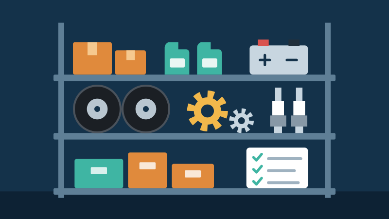

I ran teams in a spare-parts store in Venezuela and a bakery in Brickell; now I am learning how AI makes decisions under uncertainty.
General Manager, B Bistro Bakery (2023–2024)
I managed daily operations of a bakery-café in Brickell, Miami. I supervised the team, reviewed payroll, compiled weekly sales reports for the accountant, handled inventory and negotiated prices and delivery terms with vendors. The result was a well-organized store with high customer satisfaction and high employee retention.

General Manager, Repuestos El Parabrisa II (2009–2016)
I managed an auto-parts store in Venezuela for seven years. I led a team of more than 20 employees and created systems for inventory control, merchandising, financial reports and staff schedules. A new reporting system I put in place made the whole operation noticeably more efficient.
Cafe Page for a Client (MAI 500, Module 3)
A web page built for a client in my MAI 500 course. I used ready-made AI skills to plan, write and design the page. The result was a finished one-page site delivered as the client asked.
Whisper Transcription of Tahl's Talk (MAI 500, Module 4)
I ran OpenAI's Whisper speech-to-text model myself in Google Colab. I used it to turn a recorded talk into written text. The result was a full transcript, and a clear idea of what these models do well and where they make mistakes.